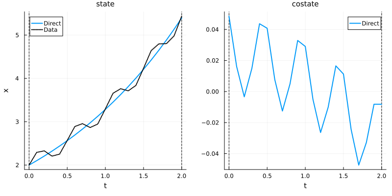
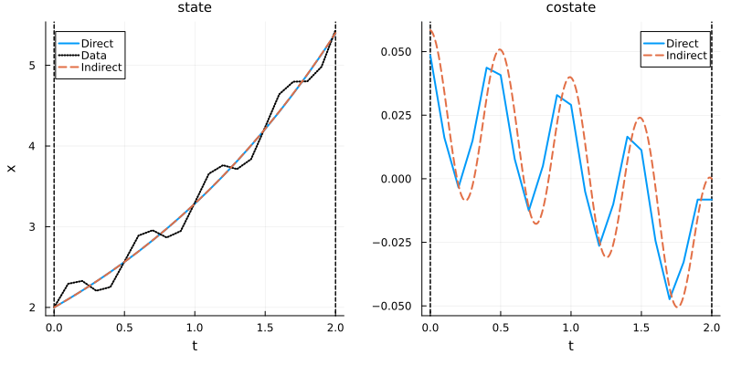
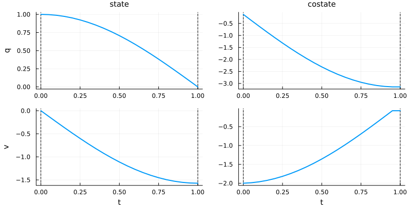
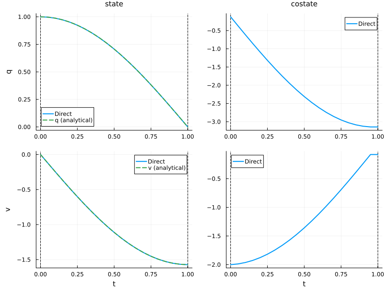
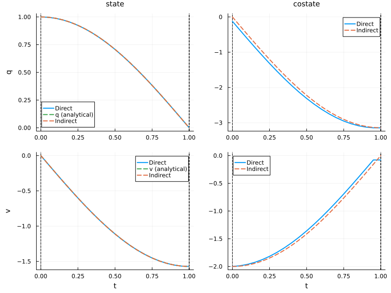

Control-free problems
Control-free problems are optimal control problems without a control variable. They are used for optimizing constant parameters in dynamical systems, such as:
- Identifying unknown parameters from observed data (parameter estimation)
- Finding optimal parameters for a given performance criterion
This page demonstrates two simple examples with known analytical solutions.
First, we import the necessary packages:
using OptimalControl
using NLPModelsIpopt
using PlotsExample 1: Exponential growth rate estimation
Consider a system with exponential growth:
\[\dot{x}(t) = \lambda \cdot x(t), \quad x(0) = 2\]
where $\lambda$ is an unknown growth rate parameter. We have observed data with some perturbations and want to estimate $\lambda$ by minimizing the squared error:
\[\min_{\lambda} \int_0^{2} (x(t) - x_{\text{obs}}(t))^2 \, \mathrm{d}t\]
The underlying model has $\lambda = 0.5$, but the observed data includes perturbations.
Problem definition
# observed data (analytical solution with λ = 0.5)
λ_true = 0.5
model(t) = 2 * exp(λ_true * t)
perturbation(t) = 2e-1*sin(4π*t)
data(t) = model(t) + perturbation(t)
# optimal control problem (parameter estimation)
t0 = 0; tf = 2; x0 = 2
ocp = @def begin
λ ∈ R, variable # growth rate to estimate
t ∈ [t0, tf], time
x ∈ R, state
x(t0) == x0
ẋ(t) == λ * x(t)
∫((x(t) - data(t))^2) → min # fit to observed data
endDirect method
direct_sol = solve(ocp; grid_size=20, display=false)• Solver:
✓ Successful : true
│ Status : first_order
│ Message : Ipopt/generic
│ Iterations : 14
│ Objective : 0.039296407666384314
└─ Constraints violation : 9.325873406851315e-15
• Variable: λ = (λ) = 0.4960778956661449
│ Var dual (lb) : [0.0]
└─ Var dual (ub) : [0.0]
• Boundary duals: [0.061507876561442874]
println("Estimated growth rate: λ = ", variable(direct_sol))
println("Objective value: ", objective(direct_sol))Estimated growth rate: λ = 0.4960778956661449
Objective value: 0.039296407666384314# plot direct solution
plt = plot(direct_sol; size=(800, 400), label="Direct")
# Add data on first plot
t_grid = time_grid(direct_sol)
plot!(plt, t_grid, data.(t_grid); subplot=1, line=:dot, lw=2, label="Data", color=:black)
The estimated parameter should be close to $\lambda \approx 0.5$.
Indirect method
We now solve the same problem using an indirect shooting method based on Pontryagin's Maximum Principle. First, we import the necessary packages:
using OrdinaryDiffEq # ODE solver
using NonlinearSolve # Nonlinear solverFor control-free problems with a variable parameter, we use an augmented Hamiltonian approach. The Hamiltonian for this problem is:
\[H(t, x, p, \lambda) = p \lambda x - (x - x_{\text{obs}}(t))^2\]
To handle the variable parameter $\lambda$, we treat it as an additional state with zero dynamics. This gives us the augmented system with state $(x, \lambda)$ and costate $(p, p_\lambda)$, where:
\[\begin{aligned} \frac{\mathrm{d}x}{\mathrm{d}t} &= \frac{\partial H}{\partial p} = \lambda x \\ \frac{\mathrm{d}\lambda}{\mathrm{d}t} &= 0 \quad \text{(constant parameter)} \\ \frac{\mathrm{d}p}{\mathrm{d}t} &= -\frac{\partial H}{\partial x} = -p\lambda + 2(x - x_{\text{obs}}(t)) \\ \frac{\mathrm{d}p_\lambda}{\mathrm{d}t} &= -\frac{\partial H}{\partial \lambda} = -px \end{aligned}\]
The transversality condition for the variable parameter requires $p_\lambda(t_f) - p_\lambda(t_0) = 0$. Assuming $p_\lambda(t_0) = 0$, we have to satisfy:
\[p_\lambda(t_f) = -\int_{t_0}^{t_f} \frac{\partial H}{\partial \lambda}(t, x(t), p(t), \lambda) \, \mathrm{d}t = 0\]
We use CTFlows' augment=true feature to automatically compute $p_\lambda(t_f)$ without manually constructing the augmented system.
# Create Hamiltonian flow from OCP
f = Flow(ocp)For more details about the flow construction, see this page.
The shooting function enforces the transversality conditions $p(t_f) = 0$ and $p_\lambda(t_f) = 0$. Using augment=true, the flow automatically returns $(x(t_f), p(t_f), p_\lambda(t_f))$, with $p_\lambda(t_0) = 0$ by construction.
# Shooting function: S(p0, λ) = (p(tf), pλ(tf))
# We want both components to be zero at tf
function shoot!(s, p0, λ)
_, px_tf, pλ_tf = f(t0, x0, p0, tf, λ; augment=true)
s[1] = px_tf
s[2] = pλ_tf
return nothing
end
# Auxiliary in-place NLE function
nle!(s, y, _) = shoot!(s, y...)We use the direct solution to initialize the shooting method:
# Extract solution from direct method for initialization
p_direct = costate(direct_sol)
λ_direct = variable(direct_sol)
# Initial guess
p0_guess = p_direct(t0)
λ_guess = λ_direct
# NLE problem with initial guess (2 unknowns: p0, λ)
prob_indirect = NonlinearProblem(nle!, [p0_guess, λ_guess])
# Solve shooting equations
shooting_sol = solve(prob_indirect; show_trace=Val(false))
p0_sol, λ_sol = shooting_sol.u
println("Indirect solution:")
println("Initial costate: p0 = ", p0_sol)
println("Parameter: λ = ", λ_sol)Indirect solution:
Initial costate: p0 = 0.058478510601397186
Parameter: λ = 0.4966212669483583Finally, we compute and plot the indirect solution:
# Compute and plot indirect solution
indirect_sol = f((t0, tf), x0, p0_sol, λ_sol; saveat=range(t0, tf, 200))
plot!(plt, indirect_sol; linestyle=:dash, lw=2, label="Indirect", color=2)
The direct and indirect solutions match closely, both fitting the perturbed observed data.
Example 2: Harmonic oscillator pulsation optimization
Consider a harmonic oscillator:
\[\ddot{q}(t) = -\omega^2 q(t)\]
with initial conditions $q(0) = 1$, $\dot{q}(0) = 0$ and final condition $q(1) = 0$. We want to find the minimal pulsation $\omega$ satisfying these constraints:
\[ \begin{aligned} & \text{Minimise} && \omega^2 \\ & \text{subject to} \\ & && \ddot{q}(t) = -\omega^2 q(t), \\[1.0em] & && q(0) = 1, \quad \dot{q}(0) = 0, \\[0.5em] & && q(1) = 0. \end{aligned}\]
The analytical solution is $\omega = \pi/2 \approx 1.5708$, giving $q(t) = \cos(\pi t / 2)$.
Problem definition
# optimal control problem (pulsation optimization)
q0 = 1; v0 = 0
t0 = 0; tf = 1
ocp = @def begin
ω ∈ R, variable # pulsation to optimize
t ∈ [t0, tf], time
x = (q, v) ∈ R², state
q(t0) == q0
v(t0) == v0
q(tf) == 0.0 # final condition
ẋ(t) == [v(t), -ω^2 * q(t)]
ω^2 → min # minimize pulsation
endDirect method
direct_sol = solve(ocp; grid_size=20, display=false)• Solver:
✓ Successful : true
│ Status : first_order
│ Message : Ipopt/generic
│ Iterations : 9
│ Objective : 2.469940014156302
└─ Constraints violation : 1.3778783669593508e-11
• Variable: ω = (ω) = 1.5716042803951324
│ Var dual (lb) : [0.0]
└─ Var dual (ub) : [0.0]
• Boundary duals: [2.776384949033009e-10, -2.003087424961417, 3.148060771075015]
println("Optimal pulsation: ω = ", variable(direct_sol))
println("Objective value: ω² = ", objective(direct_sol))
println("Expected: ω = π/2 ≈ 1.5708, ω² ≈ 2.4674")Optimal pulsation: ω = 1.5716042803951324
Objective value: ω² = 2.469940014156302
Expected: ω = π/2 ≈ 1.5708, ω² ≈ 2.4674plot(direct_sol; size=(800, 400))
The optimal pulsation should be close to $\omega = \pi/2 \approx 1.5708$, and the objective $\omega^2 \approx 2.4674$.
Comparison with analytical solutions
For the harmonic oscillator, we can compare the numerical solution with the analytical one:
# analytical solution
t_analytical = range(0, 1, 100)
q_analytical = cos.(π * t_analytical / 2)
v_analytical = -(π/2) * sin.(π * t_analytical / 2)
# plot comparison
plt = plot(direct_sol; size=(800, 600), label="Direct")
plot!(plt, t_analytical, q_analytical;
label="q (analytical)", linestyle=:dash, linewidth=2, subplot=1)
plot!(plt, t_analytical, v_analytical;
label="v (analytical)", linestyle=:dash, linewidth=2, subplot=2)
The numerical and analytical solutions should match very closely.
Indirect method
We now solve the same problem using an indirect shooting method. For this control-free problem with a variable parameter, we use an augmented Hamiltonian approach. The Hamiltonian for this problem is:
\[H(x, p, \omega) = p_1 v + p_2 (-\omega^2 q)\]
To handle the variable parameter $\omega$, we treat it as an additional state with zero dynamics. This gives us the augmented system with state $(q, v, \omega)$ and costate $(p_1, p_2, p_\omega)$, where:
\[\begin{aligned} \frac{\mathrm{d}q}{\mathrm{d}t} &= \frac{\partial H}{\partial p_1} = v \\ \frac{\mathrm{d}v}{\mathrm{d}t} &= \frac{\partial H}{\partial p_2} = -\omega^2 q \\ \frac{\mathrm{d}\omega}{\mathrm{d}t} &= 0 \quad \text{(constant parameter)} \\ \frac{\mathrm{d}p_1}{\mathrm{d}t} &= -\frac{\partial H}{\partial q} = \omega^2 p_2 \\ \frac{\mathrm{d}p_2}{\mathrm{d}t} &= -\frac{\partial H}{\partial v} = -p_1 \\ \frac{\mathrm{d}p_\omega}{\mathrm{d}t} &= -\frac{\partial H}{\partial \omega} = 2\omega q p_2 \end{aligned}\]
For this problem with a Mayer cost $g(\omega) = \omega^2$, the transversality condition for the variable parameter is:
\[p_\omega(t_f) - p_\omega(t_0)= -\frac{\partial g}{\partial \omega} = -2\omega\]
Assuming $p_\omega(t_0) = 0$, we have:
\[p_\omega(t_f) = -\int_{t_0}^{t_f} \frac{\partial H}{\partial \omega}(t, x(t), p(t), \omega) \, \mathrm{d}t = -2\omega\]
We use CTFlows' augment=true feature to automatically compute $p_\omega(t_f)$ without manually constructing the augmented system:
# Create Hamiltonian flow from OCP
f = Flow(ocp)For more details about the flow construction, see this page.
The shooting function enforces the conditions:
- Final condition: $q(t_f) = 0$
- Free final velocity: $p_2(t_f) = 0$
- Transversality condition for Mayer cost: $p_\omega(t_f) + 2\omega = 0$
Using augment=true, the flow automatically returns $(x(t_f), p(t_f), p_\omega(t_f))$, with $p_\omega(t_0) = 0$ by construction.
# Shooting function: S(p0, ω)
function shoot!(s, p0, ω)
x_tf, p_tf, pω_tf = f(t0, [q0, v0], p0, tf, ω; augment=true)
q_tf = x_tf[1]
pv_tf = p_tf[2]
s[1] = q_tf # q(tf) = 0
s[2] = pv_tf # p2(tf) = 0 (free final velocity)
s[3] = pω_tf + 2ω # pω(tf) + 2ω = 0 (Mayer cost transversality)
return nothing
end
# Auxiliary in-place NLE function
nle!(s, y, _) = shoot!(s, y[1:2], y[3])We use the direct solution to initialize the shooting method:
# Extract solution from direct method for initialization
p_direct = costate(direct_sol)
ω_direct = variable(direct_sol)
# Initial guess
p0_guess = p_direct(t0)
ω_guess = ω_direct
# NLE problem with initial guess
prob_indirect = NonlinearProblem(nle!, [p0_guess..., ω_guess])
# Solve shooting equations
shooting_sol = solve(prob_indirect; show_trace=Val(false))
p0_sol, ω_sol = shooting_sol.u[1:2], shooting_sol.u[3]
println("Indirect solution:")
println("Initial costate: p0 = ", p0_sol)
println("Parameter: ω = ", ω_sol)Indirect solution:
Initial costate: p0 = [7.62813477748342e-15, -2.0000000000035025]
Parameter: ω = 1.5707963267948069Finally, we compute and plot the indirect solution:
# Compute and plot indirect solution
indirect_sol = f((t0, tf), [q0, v0], p0_sol, ω_sol; saveat=range(t0, tf, 200))
plot!(plt, indirect_sol; linestyle=:dash, lw=2, label="Indirect", color=2)
The direct and indirect solutions match closely, both finding the optimal pulsation $\omega \approx \pi/2$.
Control-free problems appear in many contexts:
- System identification: estimating physical parameters (mass, damping, stiffness) from experimental data
- Optimal design: finding optimal geometric or physical parameters (length, stiffness, etc.)
- Inverse problems: reconstructing unknown inputs or initial conditions from partial observations
See the syntax documentation for more details on defining control-free problems.